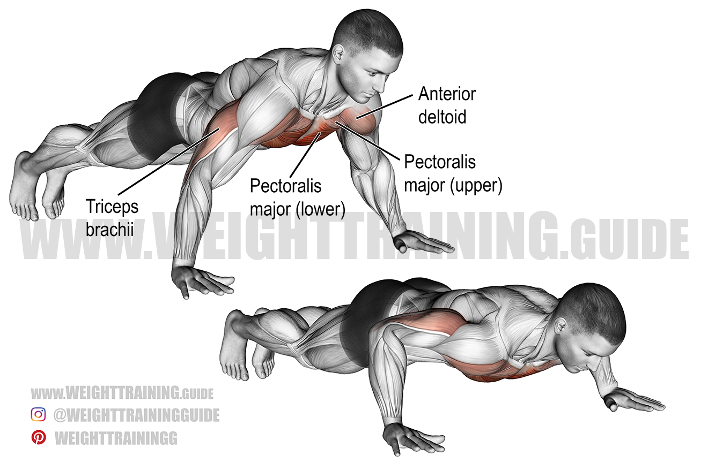
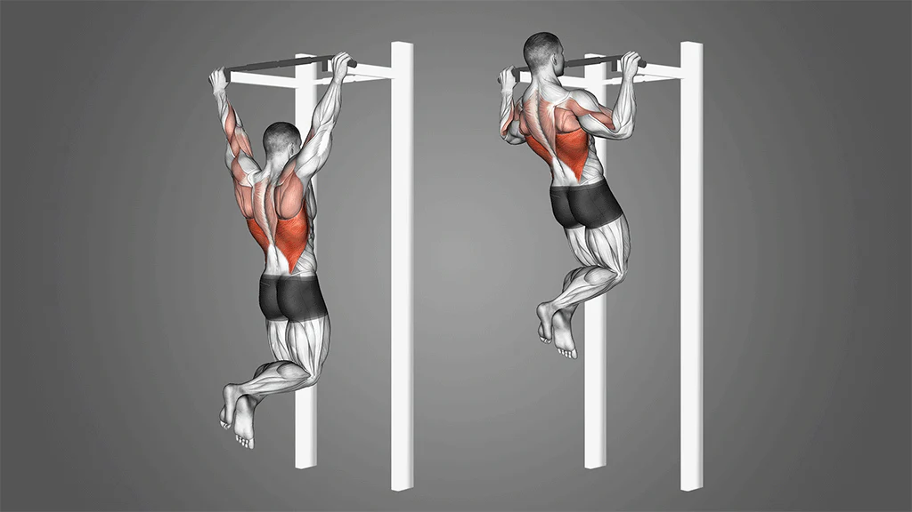
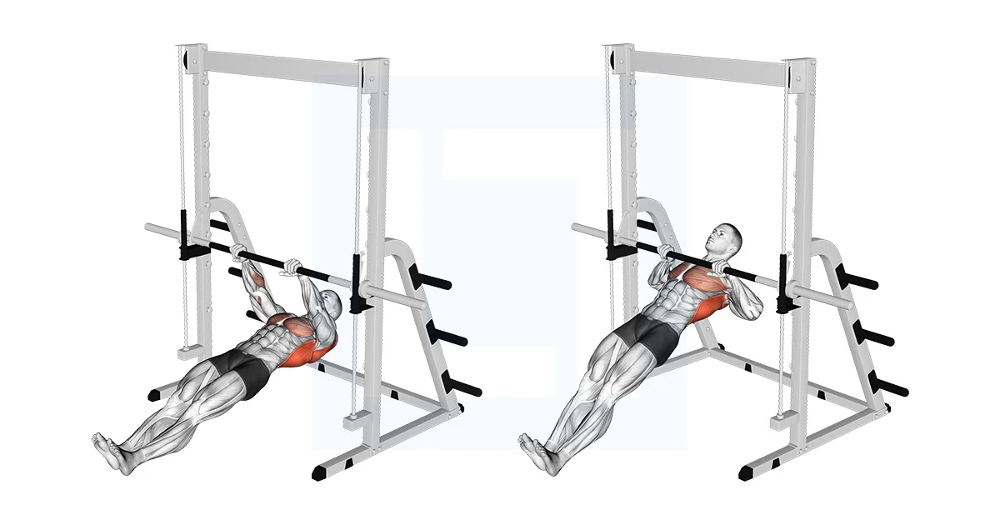
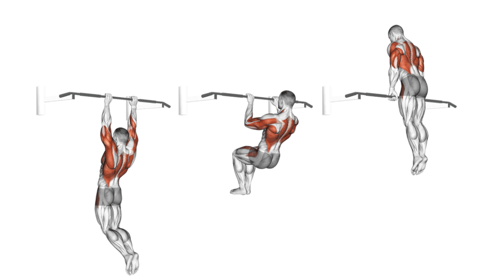

Push-ups are one of the most effective and accessible bodyweight exercises
Pull-ups are one of the best exercises for upper-body strength and overall fitness.
The inverted row (also called bodyweight row or Australian pull-up) is a horizontal pulling exercise that’s excellent for beginners and advanced athletes alike.
he muscle-up is one of the most impressive and powerful bodyweight exercises — a true test of strength, speed, and skill.
